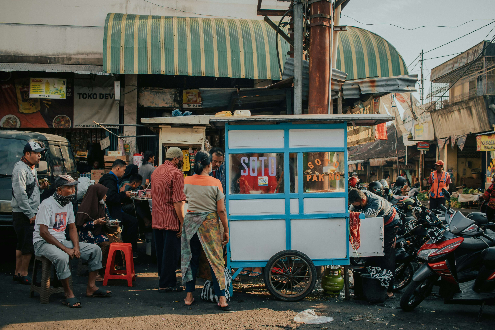
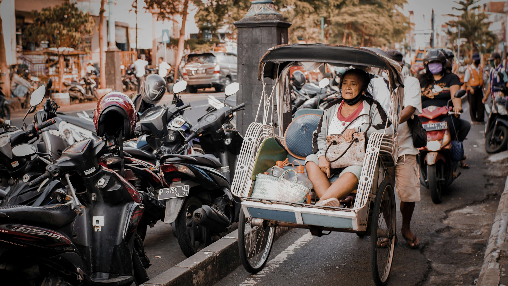

Harmoni Alam, Budaya, dan Pengalaman Tak Terlupakan
Salatiga
Sebuah kota kecil di lereng gunung, di mana setiap sudut menghadirkan cerita, rasa, dan kehangatan yang sulit dilupakan.


Salatiga bukan sekadar kota—ia adalah cerita yang hidup dari masa ke masa. Dari jejak Prasasti Plumpungan hingga bangunan kolonial yang masih berdiri anggun, setiap sudut kota menyimpan kisah tentang perjalanan panjang budaya dan peradaban.
Detail Sejarah SalatigaJelajahi Wisata Populer

Fakta Tentang Salatiga
Kota kecil yang sejuk ini menyimpan banyak cerita unik, mulai dari sejarah kuno, keberagaman budaya, hingga prestasi yang membuat Salatiga dikenal di tingkat nasional.
Kota Tertua di Jawa Tengah
Hari Jadi Salatiga ditetapkan berdasarkan Prasasti Plumpungan yang bertanggal 24 Juli 750 Masehi, menjadikannya salah satu kota tertua di Indonesia.
Dijuluki Kota Tertoleran
Salatiga beberapa kali dinobatkan sebagai salah satu kota paling toleran di Indonesia karena keberagaman masyarakat dan kerukunan antarumat beragama.
Dikelilingi Pegunungan
Salatiga berada di antara Gunung Merbabu, Telomoyo, dan Ungaran yang membuat udaranya sejuk sepanjang tahun.
Kota Pendidikan
Kehadiran berbagai perguruan tinggi dan sekolah menjadikan Salatiga sebagai salah satu pusat pendidikan penting di Jawa Tengah.
Surga Pecinta Olahraga
Kontur kota yang berbukit dan udara yang segar membuat Salatiga menjadi destinasi favorit untuk bersepeda, lari, dan olahraga luar ruang.
Dekat dengan Jalur Kopi Jawa
Lokasinya yang strategis di kawasan pegunungan membuat Salatiga memiliki banyak kedai kopi dan akses mudah menuju perkebunan kopi di sekitarnya.
Rekomendasi Rencana Perjalanan
Temukan Acara & Festival

Kirab Budaya 1
Kirab Budaya 1
Kirab Budaya 1
Kirab Budaya 1
Siap Menjelajahi Salatiga?
Temukan lebih banyak destinasi, kuliner khas, budaya, dan pengalaman menarik lainnya di Kota Salatiga.
Jelajahi Destinasi Lain